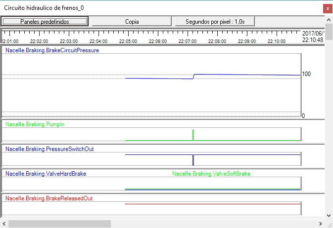

En esta práctica se trata de observar el comportamiento en situación normal del circuito de frenos.
Debe asegurarse de que el aerogenerador está en producción (conectado a la Red) y observar el indicador de "Pres. circ. frenos" en el sinóptico "SynopticDriveTrain". Así mismo asegúrese que tiene un registrador con el panel "Circuito hidraulico de frenos".
Fíjese en que la presión del circuito hidráulico se mantiene en la zona verde, con una evolución que es la siguiente.
•Mientras no es activa la bomba, la presión desciende muy lentamente (lo que corresponde a un circuito con muy pocas pérdidas de presión), hasta que su valor desciende por debajo del valor mínimo de la zona verde.
•Cuando el valor desciende por debajo del valor mínimo de la zona verde, el Controlador pone en marcha la bomba, que rápidamente hace subir la presión.
•Cuando la presión pasa a ser superior al valor máximo de la zona verde, el Controlador para la bomba.
La siguiente figura es un ejemplo de la evolución de las señales involucradas.
